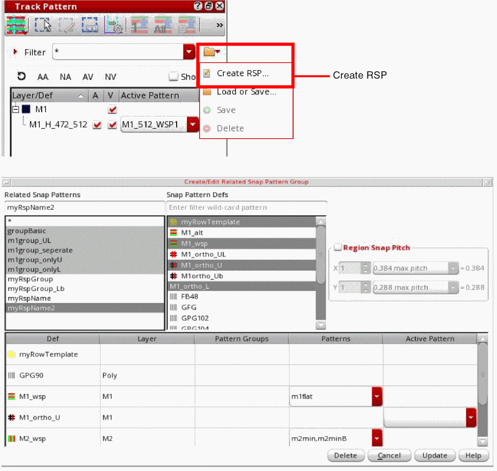
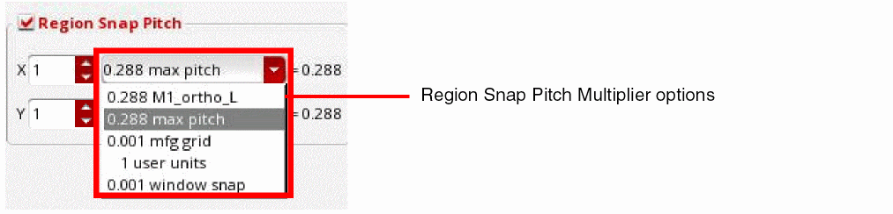

Creation and Editing of Related Snap Pattern Group
You can create or edit related snap patterns using the Create RSP option and the options in the Create/Edit Related Snap Pattern Group form.

You can select the snap pattern defs for a related snap pattern. You can also delete a selected RSP using the Delete button.
You can also select multiple related snap patterns. Use Shift or Ctrl with the pointer to toggle between the related snap patterns. The combined related snap patterns are used to select the active WSSPDefs and allowed patterns.
You can select the Region Snap Pitch check box to specify the X and Y attributes for the pitch.

Related Topics
Launching the Track Pattern Assistant
Track Pattern Assistant Toolbar
Return to top